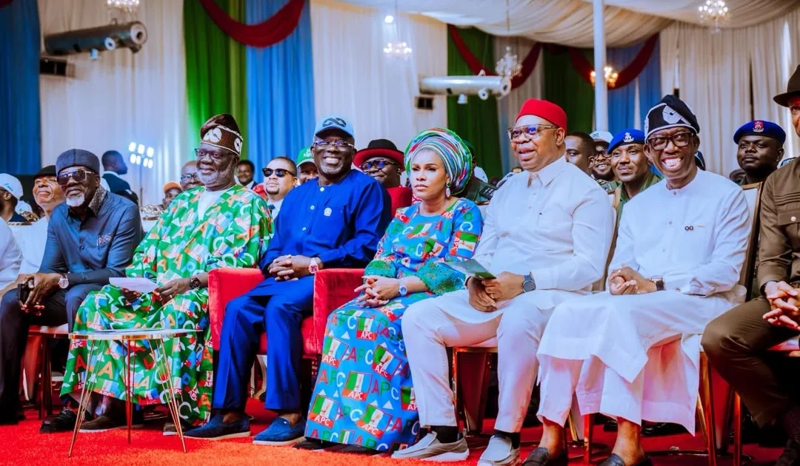

Security & Crime · 22 Oct 2026
Oborevwori inaugurates Delta APC campaign council

Delta State Governor, Sheriff Oborevwori, has inaugurated the All Progressives Congress Campaign Council to intensify grassroots mobilisation for the 2027 Read More: https://punchng.com/oborevwori-inaugurates-delta-apc-campaign-council/
Multiple independent publishers are reporting on the same development: Oborevwori inaugurates Delta APC campaign council.
The available reports place the development in the Security & Crime category. The accounts were compared for agreement on the central event rather than simply shared names or broad topics.
One of the available reports describes the development this way: Delta State Governor, Sheriff Oborevwori, has inaugurated the All Progressives Congress Campaign Council to intensify grassroots mobilisation for the 2027 Read More: https://punchng.com/oborevwori-inaugurates-delta-apc-campaign-council/
Readers should consult the linked source reports for additional context, updates and details that may change as the story develops.
Sources
This article was produced by the C. O. Eric AI Newsroom from the cited sources. It is published only after automated evidence and safety checks.